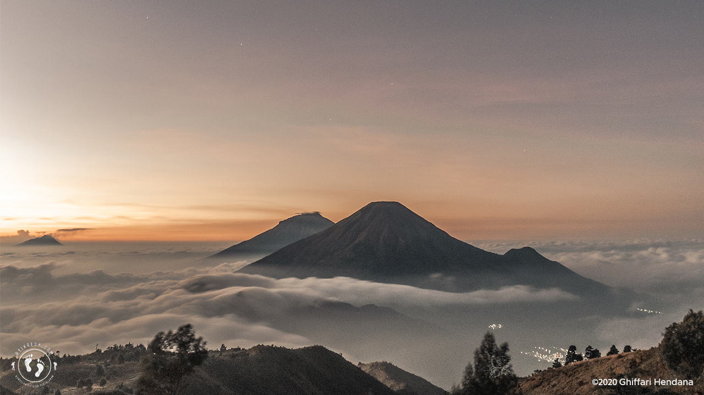
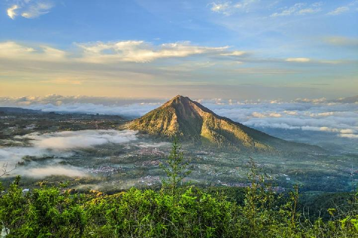
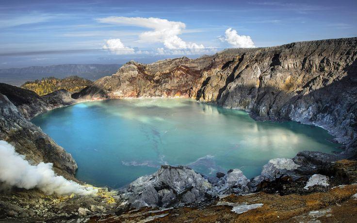
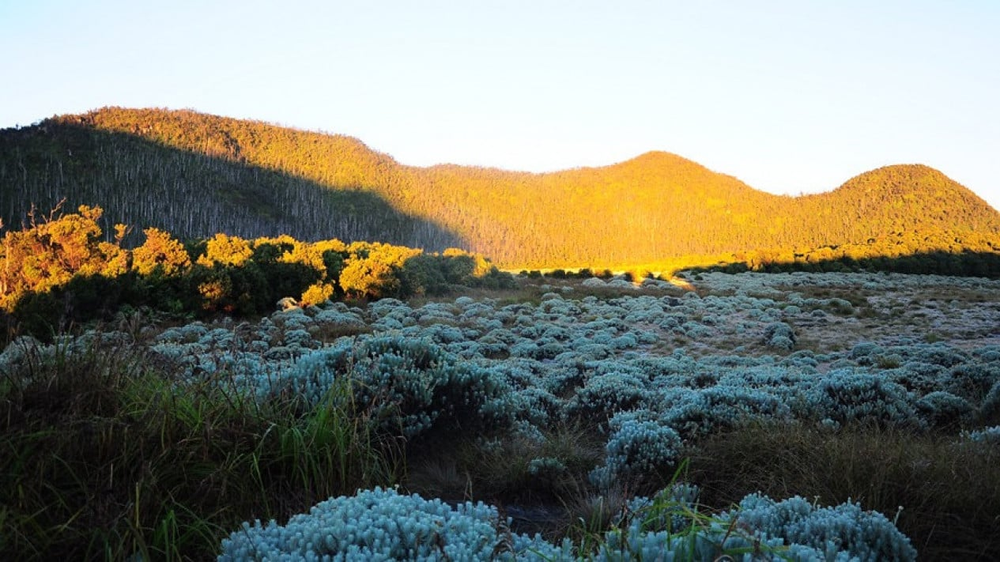

1. Gunung Prau
Lokasi: Dieng, Jawa Tengah | Ketinggian: 2.565 mdpl
Lihat Selengkapnya2. Gunung Andong
Lokasi: Magelang, Jawa Tengah | Ketinggian: 1.726 mdpl
Lihat Selengkapnya3. Gunung Bromo

Lokasi: Jawa Timur | Ketinggian: 2.329 mdpl
Lihat Selengkapnya4. Gunung Ijen
Lokasi: Banyuwangi, Jawa Timur | Ketinggian: 2.386 mdpl
Lihat Selengkapnya5. Gunung Papandayan
Lokasi: Garut, Jawa Barat | Ketinggian: 2.665 mdpl
Lihat Selengkapnya